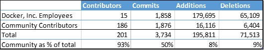
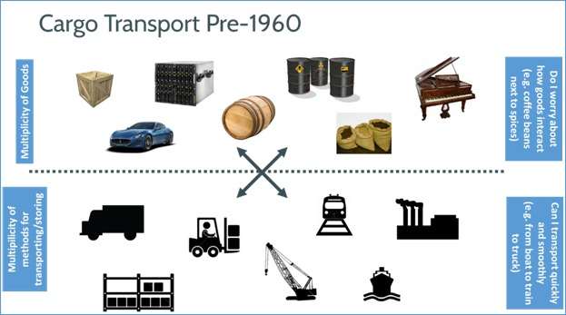
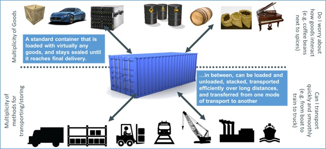
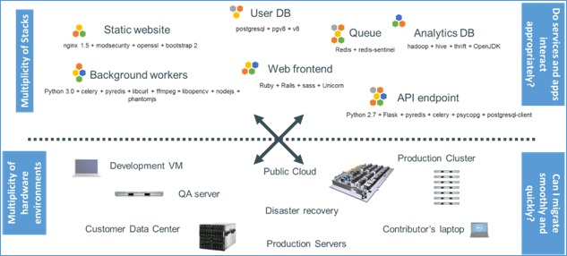
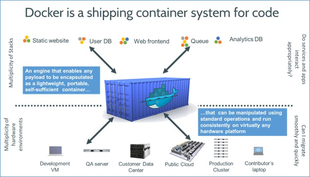

Docker

Some Stats
Released around March 2013

What we'll be covering
- Who is docker for?
- What problems does docker solve?
- What is a container?
- Docker 101
Q: Who is docker for?
A: Devs
- All languages
- All databases
- All OSes
- Specifically Linux systems
Docker will eventually be able to target FreeBSD, Solaris and maybe OS X.
Q: Who is docker for?
A: Server Ops
- Any distribution 1
- Any cloud 2
- Any machine (physical, virtual...)
- Recent kernels 3
1 as long as it's Ubuntu, Debain, others are on the way (Centos, RHEL, Arch, Fedora, etc)
2 as long as they don't ship with a custom kernel
3 at least 3.8; support for RHEL 2.6.32 is coming
What problem does docker solve?
A history lesson
A history lesson
A container for system code
A container for system code
Linux Containers
Units of software delivery (ship it!)
-
Run everywhere
- Regardless of kernel version (*cough 3.8 cough*)
- Regardless of host distribution
- (*but container and host architecture must match*)
-
Run anything
- If it can run on the host, it can run in the container
- i.e.; If it can run on a Linux kernel, it can run
*Unless you emulate CPU with qemu and binfmt
What's a Container
From 10,000 feet
Its a lightweight VM
- Own process space
- Own network interface
- Can run stuff as root
- Can have its own sbin/init (different from host)
What's a Container
Looking closer
Its chroot on steroids
- Container = isolated process(es)
- Share kernel with host
- No device emulation
Separations of Concerns
For Developers
-
Inside my container
- My code
- My libraries
- My package manager
- My app
- My data
Separations of Concerns
For Server Ops
-
Outside the container
- Logging
- Remote access
- Network configuration
- Monitoring
How does it work?
Isolation with namespaces
- pid
- mnt
- ipc
- user
How does it work?
Isolation with cgroups
- memory
- cpu
- blkio
- devices
How does it work?
Copy-on-write storage
- Unioning filesystems (AUFS)
- Snapshotting filesystems (BRTFS, ZFS)
- Copy-on-write block devices (thin snapshots with LVM or device-mapper)
Docker 101
YAGNI
Thank you
- https://github.com/andredublin
- @andredublin